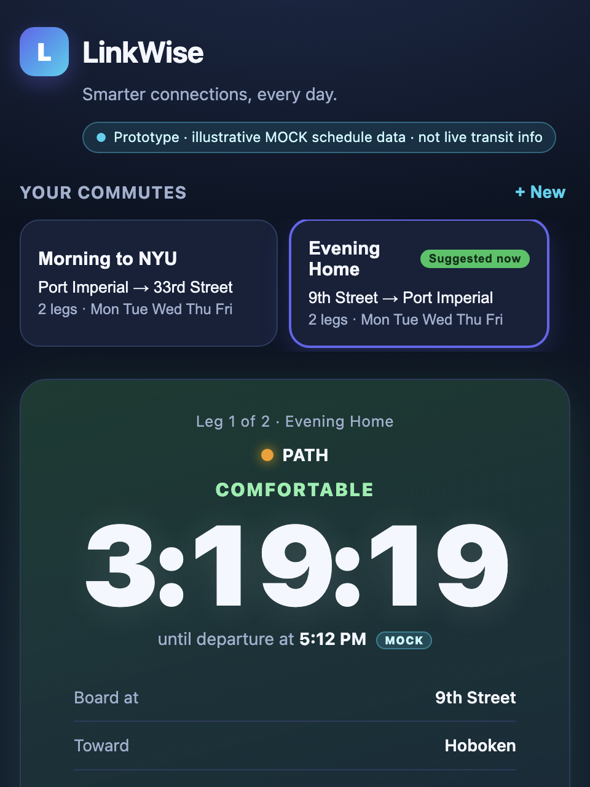
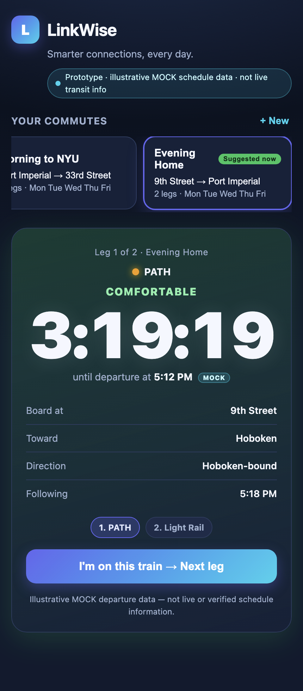
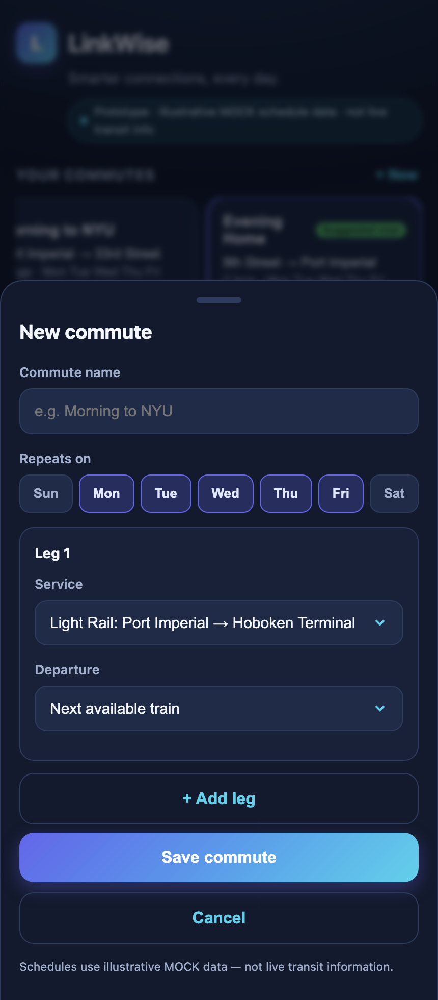
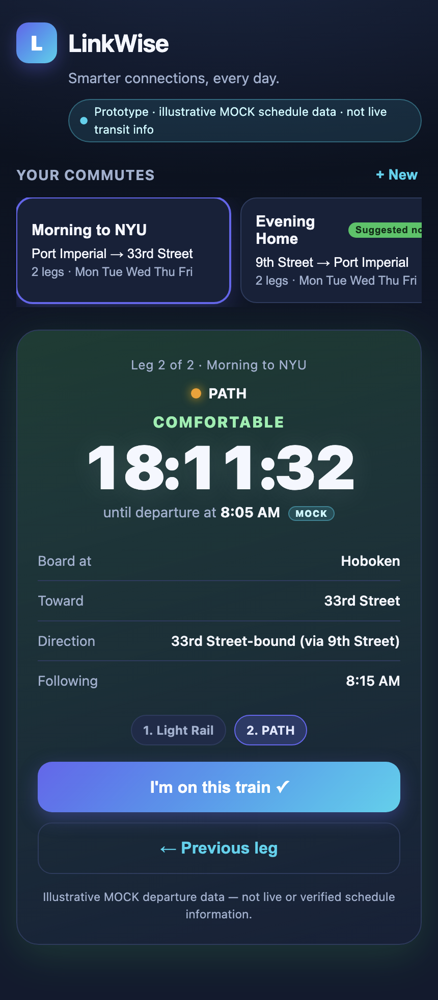

Smarter connections, every day. — a personalized commuter assistant that helps NJ–NYC riders catch their transit connections through large, colorful departure countdowns.
Current Status: Pivoted to LinkWise — local prototype (runs on your machine).
Demo: Screenshots below are captured from the working local app/index.html prototype.




Long-term vision: LinkWise is a personalized commute assistant — Smarter connections, every day. It helps people who ride the same NJ–NYC routes daily make smarter connections with real-time departure countdowns, saved daily routes, and personalized preferences across PATH, NJ Transit Rail, and Hudson-Bergen Light Rail. Future versions add location-triggered alerts, verified platform/track assignments, crowding estimates, speed-vs-comfort recommendations, and live operator integrations.
Current build scope (this prototype): A personalized countdown assistant. The rider saves named multi-leg commutes with recurring weekdays; the dashboard suggests the right commute for the current day and time (or the rider switches manually); a large, colorful per-second countdown shows the next train’s boarding station, destination, direction, and operator; the rider taps “I'm on this train” to advance through legs; and when a departure passes, the countdown rolls to the next eligible one. Commutes persist in localStorage. It uses illustrative MOCK schedule data and does not connect to live transit systems. Live API integration, location alerts, and platform/crowding data are out of scope for this build.
Who is this for? NJ-resident NYU classmates and friends who commute into Manhattan via PATH, NJ Transit Rail, and Hudson-Bergen Light Rail. They ride the same routes daily and are reachable in person on campus, so I can watch them use it on a real morning or evening commute.
The painful "Before" workflow: A door-to-door commute chains multiple operators and transfers. Riders check separate apps and schedules, do mental math on “can I still make it?”, and risk missing a tight connection — with no single, glanceable view of how long until their specific next train leaves.
The "After" workflow with this product: The rider opens LinkWise, which already shows the right commute for right now, and sees one big countdown to their next train — with the exact station, direction, and operator. They tap “I'm on this train” to advance to the next leg, and if they miss one, the countdown simply rolls to the following departure.
ScheduleService seam.Riskiest Assumption: That a glanceable, per-second departure countdown for a rider’s own saved commute is valuable enough to open daily — and that mock schedule data can later be swapped for live operator feeds without reworking the experience. (This build tests the desirability of the countdown-first flow before any real integration.)
Simple Architecture: Mock schedule file (app/data/mock_schedule.json) → ScheduleService (the single data seam) → dashboard suggestion + per-second countdown engine (pure vanilla JS) → commutes persisted in localStorage. No server, no framework, no network calls beyond loading the local mock-data file. Connecting a real transit API later means reimplementing ScheduleService only. Deterministic logic is covered by tests/schedule_logic.test.js (run with node).
ScheduleService seam (mock data now, real APIs later) and deterministic Node tests (tests/schedule_logic.test.js, 18 passing). Replaced mock_fares.json with mock_schedule.json (old data preserved in Git history).ScheduleService made the mock-to-live path a one-module change, and driving a headless browser (no new dependencies) let me verify the app actually boots and renders, not just that the syntax is valid.app/ — a simulated unified transit commerce flow: select a multi-operator journey → combined ticket basket (held passes cover matching legs at $0) → simulated checkout → persistent journey wallet of DEMO tickets. Built in the navy/purple theme, reusing prior data and render patterns. Added real screenshots of the running prototype (populated multi-operator basket and simulated journey wallet) to this Product Page. PRD updated with the “One journey. One payment. Every ride.” vision (Checkout / Handoff / Bundles), reachable user, before/after workflow, core workflow, three non-goals, and the vision-vs-Build-1 distinction.app.js/JSON could run against new markup and silently fail — now cache-busted on load with a visible error banner if the mock data can’t be fetched; and (2) pass coverage that incorrectly covered every route an agency operates — coverage now requires both a matching transit system and an explicitly eligible route, defaulting to “not covered” when eligibility is unknown (verified against covered and uncovered journeys).